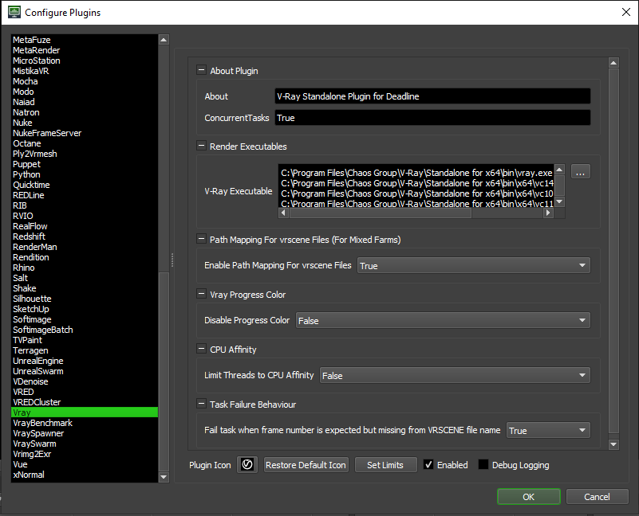

V-Ray Standalone¶
Job Submission¶
You can submit V-Ray Standalone jobs from the Monitor or via an in-app submitter such as MayaBatch as an export job.
Setup your vrscene Files¶
Before you can submit a V-Ray Standalone job, you must export your scene into .vrscene files. You can export into either one .vrscene file with all your frames in it, or one .vrscene file per frame.
Submission Options¶
The general Deadline options are explained in the Job Submission documentation, and the Draft/Integration options are explained in the Draft and Integration documentation.
The V-Ray specific options are:
V-Ray File: The V-Ray file (*.vrscene) to be rendered. If you are submitting a sequence of vrscene files (one file per frame), you only need to select one vrscene file from the sequence.
Output File: Optionally override the output file name.
Separate Input vrscene Files Per Frame: Select this option of you are submitting a sequence of vrscene files (one file per frame).
Threads: The number of threads to use for rendering. Specify 0 to use the optimal number of threads.
Command Line Args: Specify additional command line arguments you would like to pass to the mental ray renderer.
Vrimg2Exr Options: If you are saving out vrimg files, you can submit a dependent Vrimg2Exr job that will convert the vrimg files to exr files.
Render Engine: Specifies which render engine V-Ray will use.
Frame Timeout: The maximum render time (in minutes) when rendering using V-Ray RT. Set to 0.0 for no timeout.
Noise Threshold: The noise threshold when rendering using V-Ray RT.
Sample Level: The maximum number of samples that will be used when rendering usng V-Ray RT. Set to 0 for no limit.
Display Frame Buffer: If enabled, the V-Ray Frame Buffer will be displayed on the rendering machine while the job renders.
Renderable on AWS: If enabled, the *.vrscene file will be parsed to retrieve the output file path, so the AWS portal will be able to return the rendered output.
Resolution Override¶
Enable Resolution Override to change the dimensions of your frame or ensure “Enable File Parsing” is enabled to retrieve this information from parsing the *.vrscene file directly. This is required for Tile Rendering.
Enable Override Resolution: If enabled, V-Ray will override the resolution of your scene.
Width: The new width of your frame.
Height: The new height of your frame.
Tile Rendering Options¶
Enable Tile Rendering to split up a single frame into multiple tiles. Overriding the resolution is required to enable Tile Rendering. Vrimg2exr is not supported by the Tile Rendering option.
Enable Tile Rendering: If enabled, the frame will be split into multiple tiles that are rendered individually and can be assembled after.
Enable File Parsing: If enabled, the *.vrscene file will be parsed to retrieve the output file path and render resolution.
Tiles in X: The number of tiles in the X direction.
Tiles in Y: The number of tiles in the Y direction.
Single Frame Tile Job Enabled: Enable to submit all tiles in a single job.
Single Job Frame: The frame that will be split up.
Submit Dependent Assembly Job: Submit a job dependent on the tile job that will assemble the tiles.
Cleanup Tiles after Assembly: If selected the tiles will be deleted after assembly.
Error on Missing Tiles: If enabled, then if any of the tiles are missing the assembly job will fail.
Assemble Over: Determine what the Draft Tile Assembler should assemble over be it a blank image, previous output or a specified file.
Error on Missing Background: If enabled, then if the background file is missing the job will fail.
Assemble Over: What the tiles should be assembled over.
Background Image File: The Background image to assemble over.
Plugin Configuration¶
You can configure the V-Ray plugin settings from the Monitor. While in power user mode, select Tools -> Configure Plugins and select the V-Ray plugin from the list on the left.
Render Executables
V-Ray Executable: The path to the V-Ray executable file used for rendering. Enter alternative paths on separate lines.
Path Mapping For vrscene Files (For Mixed Farms)
Enable Path Mapping For vrscene Files: If enabled, a temporary vrscene file will be created locally on the Worker for rendering and Deadline will do path mapping directly in the vrscene file.
V-Ray Progress Color
Disable Progress Color: V-Ray progress color is enabled by default. Disabling V-Ray progress color can help prevent crashes in some newer versions of windows. Note that older versions of V-Ray do not support this option.
CPU Affinity
Limit Threads To CPU Affinity: If enabled, the number of render threads will be limited to the CPU affinity of the rendering Worker.
Task Failure Behaviour
Fail task when frame number is expected but missing from VRSCENE file name: If enabled, renders will fail when two or more plugin parameters are inconsistent with each other
FAQ¶
Is V-Ray Standalone supported?
Yes.
When rendering my Workers are ignoring the CPU Affinity.*
Some renderers modify the CPU affinity when a render starts. In these cases you can enable the Plugin Configuration option “Limit Threads To CPU Affinity” which will limit the number of threads the renderer can use.
Error Messages and Meanings¶
This is a collection of known V-Ray error messages and their meanings, as well as possible solutions. We want to keep this list as up to date as possible, so if you run into an error message that isn’t listed here, please contact Deadline Support and let us know.
V-Ray has failed to read an argument from the input file. Please make sure V-Ray standalone is up to date.
Older versions of V-Ray Standalone do not support parameters in angle brackets (eg “<frame04>”) in .vrscene files. To fix this update the version of V-Ray Standalone you are using.

{kind=link}
{kind=link}
{kind=link}
{kind=link}